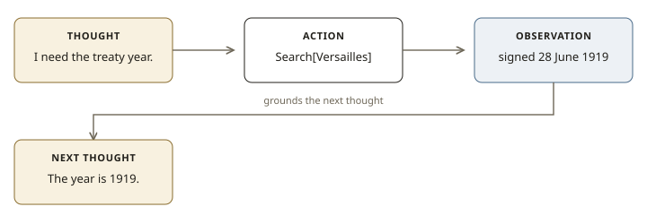

Lesson 0007 · Phase 2: Core patterns · ~12 minutes
Thought, action, observation — interleaved. The pattern every tool loop implements.
ReAct: Synergizing Reasoning and Acting in Language Models (Yao, Zhao, Yu, Du, Shafran, Narasimhan, Cao — ICLR 2023).[1]
Until ReAct, two literatures sat apart. CoT (lesson 0006) produced reasoning traces but never left the model’s head — hallucination and error propagation included. Acting papers produced action sequences but no verbal working memory. ReAct asks the model for both, interleaved:

Thought: I need the year of the treaty. Search Wikipedia.
Action: Search[Treaty of Versailles]
Observation: The Treaty of Versailles, signed 28 June 1919…
Thought: The year is 1919. I can answer.
Action: Finish[1919]On HotpotQA and FEVER, ReAct with a Wikipedia API beat Act-only and was competitive with CoT, while avoiding CoT’s ungrounded hallucinations. On ALFWorld and WebShop, one- or two-shot ReAct beat imitation/RL methods trained on 10³–10⁵ tasks, by +34% and +10% success respectively.[1]
The ablation that matters in interviews: ReAct beats Act-only. Removing the Thought: line hurts. Reasoning is not decoration; it is how the model keeps a working plan across actions.
The paper’s implementation is a prompt template over PaLM-540B / GPT-3, plus a tiny action space (Search, Lookup, Finish; or game actions). There is no “ReAct library” in the result. When people say “a ReAct agent” today they mean: the tool loop from lesson 0002, with the model allowed (or encouraged) to emit reasoning tokens before a tool call.
Modern APIs folded the Action: line into structured tool_calls. The Thought: line became “reasoning” / “thinking” traces, or ordinary assistant text. The synergy the paper named did not go away.
ReAct is an agent pattern. If the steps are enumerable, use a workflow (lesson 0003). If the model’s thoughts are leaking into a user-facing channel you did not intend, hide them — thoughts are for the model and for you, not always for the customer. And thoughts cost tokens. On a trivial lookup, Act-only is cheaper and fine.
1. ReAct’s synergy, in the paper’s words, is that…
2. Why does ReAct beat vanilla CoT on factoid QA with a Wikipedia tool?
3. Today’s tool_calls APIs relate to ReAct how?
4. Act-only (no Thought line) is worse in the paper because…
Yao et al. — ReAct, PDF. Read the abstract, §1, and the first page of §2 (Figure 1). Project page with trajectories: react-lm.github.io.
If you want to contrast a CoT-only hallucination with a ReAct trace on the same question, ask. We can do it in chat without opening a notebook.